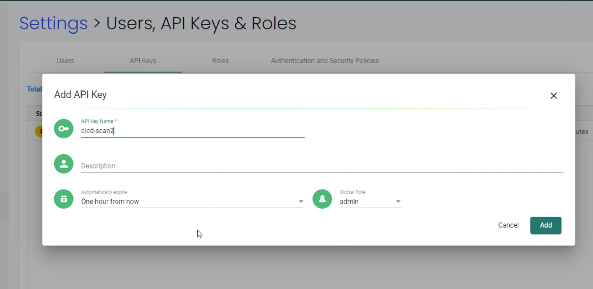
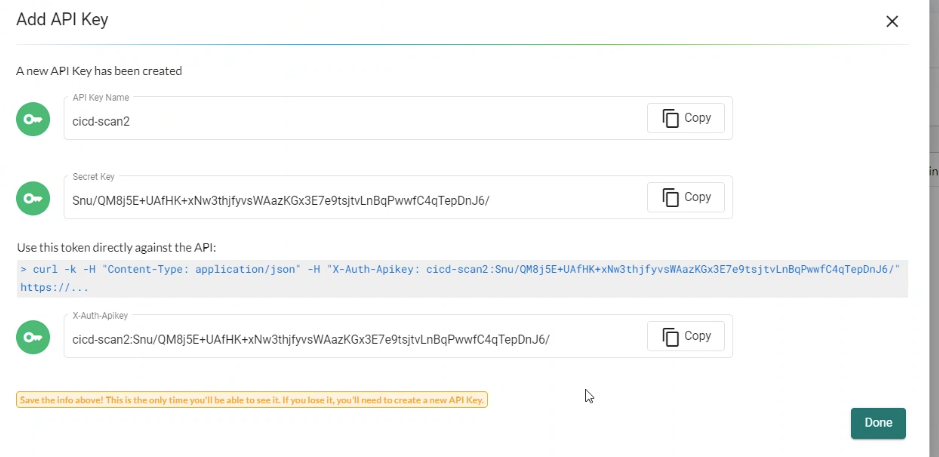
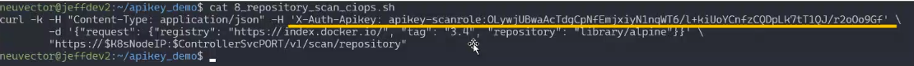

REST API and Automation
SUSE® Security Automation
There are many automation features in SUSE® Security to support the entire CI/CD workflow, including:
-
Jenkins plug-in to automated scanning during build
-
Registry scanning to automate repository monitoring
-
Admission Control policies to allow/deny unauthorized deployments
-
CIS benchmarks automatically run on hosts
-
Helm chart on github for automated deployment on Kubernetes
-
Response rules to automate responses to security events
-
REST API for building automation of any SUSE® Security function
REST API
The SUSE® Security solution can be managed using the REST API. Below are common examples of automation using the REST API. The REST API yaml doc is best viewed in the Swagger 2.0 viewer. The REST API documentation is below in a yaml file which is best viewed in a reader such as swagger.io.
Latest update can be found here. Also in the SUSE® Security GitHub source code repo. The apis.yaml from the main truck can include unreleased features. It is recommended to download the appropriate released version source code and extract the apis.yaml from the controller/api folder.
|
If you are making REST API calls with username/password, please be sure make a DELETE call against /v1/auth when done. There is a maximum of 32 concurrent sessions for each user. If this is exceeded, an authentication failure will occur. |
SUSE® Security also support Response Rules to automate common responses to security events or vulnerabilities detected. Please see the section Security Policy → Response Rules for more details.
Expose REST API in Kubernetes
To expose the REST API for access from outside of the Kubernetes cluster, enable port 10443.
apiVersion: v1
kind: Service
metadata:
name: neuvector-svc-controller-api
namespace: neuvector
spec:
ports:
- port: 10443
name: controller-api
protocol: TCP
type: LoadBalancer
selector:
app: neuvector-controller-pod|
|
|
If using type LoadBalancer, set the controllerIP in the examples below to the external IP or URL for the loadbalancer. |
Authentication for REST API
The REST API supports two types of authentication: username/password and token. Both can be configured in Settings → Users, API Keys & Roles, and be associated with default or custom roles to limit access privileges. The examples below show username/password based authentication where a token is created first, then used in subsequent REST API calls. If using a token, it can be used directly in each REST API call. Note: username based connections have a limited number of concurrent sessions, so it is important to delete the username token as shown below when finished. Token based authentication does not have a limit, but expire according to the time limit selected when created.
For token-based authentication, see the following screen shots and example call. Be sure to copy the secret and token once created, as there is no way to retrieve this after the screen in closed.



Trigger Vulnerability Scanning from a script
SUSE® Security can be triggered automatically to scan an image for vulnerabilities. This can be done by configuring a registry/repository to be monitored, using the SUSE® Security Jenkins plug-in, or using the REST API. Please see the section on Scanning & Compliance for more detail.
The sample script below shows how to remotely pull the container, run it, and scan it. It can be triggered from a Jenkins task (remote shell) or any CI/CD tool. A JSON parser tool (jq) is also used.
Be sure to enter the controller IP address in the script and change the container image name to the one you wish to scan. Also, update the username/password fields.
Click here for details
_curCase_=`echo $0 | awk -F"." '{print $(NF-1)}' | awk -F"/" '{print $NF}'`
_DESC_="able to scan ubuntu:16.04 image"
_ERRCODE_=0
_ERRTYPE_=1
_RESULT_="pass"
# please remember to specify the controller ip address here
_controllerIP_="<your_controller_ip>"
_controllerRESTAPIPort_="10443"
_neuvectorUsername_="admin"
_neuvectorPassword_="admin"
_registryURL_=""
_registryUsername_=""
_registryPassword_=""
_repository_="alpine"
_tag_="latest"
curl -k -H "Content-Type: application/json" -d '{"password": {"username": "'$_neuvectorUsername_'", "password": "'$_neuvectorPassword_'"}}' "https://$_controllerIP_:$_controllerRESTAPIPort_/v1/auth" > /dev/null 2>&1 > token.json
_TOKEN_=`cat token.json | jq -r '.token.token'`
echo `date +%Y%m%d_%H%M%S` scanning an image ...
curl -k -H "Content-Type: application/json" -H "X-Auth-Token: $_TOKEN_" -d '{"request": {"registry": "'$_registryURL_'", "username": "'$_registryUsername_'", "password": "'$_registryPassword_'", "repository": "'$_repository_'", "tag": "'$_tag_'"}}' "https://$_controllerIP_:$_controllerRESTAPIPort_/v1/scan/repository" > /dev/null 2>&1 > scan_repository.json
while [ `wc -c < scan_repository.json` = "0" ]; do
echo `date +%Y%m%d_%H%M%S` scanning is still in progress ...
sleep 5
curl -k -H "Content-Type: application/json" -H "X-Auth-Token: $_TOKEN_" -d '{"request": {"registry": "'$_registryURL_'", "username": "'$_registryUsername_'", "password": "'$_registryPassword_'", "repository": "'$_repository_'", "tag": "'$_tag_'"}}' "https://$_controllerIP_:$_controllerRESTAPIPort_/v1/scan/repository" > /dev/null 2>&1 > scan_repository.json
done
echo `date +%Y%m%d_%H%M%S` log out
curl -k -X 'DELETE' -H "Content-Type: application/json" -H "X-Auth-Token: $_TOKEN_" "https://$_controllerIP_:$_controllerRESTAPIPort_/v1/auth" > /dev/null 2>&1
cat scan_repository.json | jq .
rm *.json
echo `date +%Y%m%d_%H%M%S` [$_curCase_] $_DESC_: $_RESULT_-$_ERRCODE_|
You may need to install jq |
For Kubernetes based deployments you can set the Controller IP as follows:
_podNAME_=`kubectl get pod -n neuvector -o wide | grep "allinone\|controller" | head -n 1 | awk '{print $1}'`
_controllerIP_=`kubectl exec $_podNAME_ -n neuvector -- consul info | grep leader_addr | awk -F":| " '{print $3}'`|
In a multiple controller deployment the requests must be sent to a single controller IP so multiple requests for status of long running image scans go to the controller performing the scan. |
For scanning locally instead of in a registry:
curl -k -H "Content-Type: application/json" -H "X-Auth-Token: $_TOKEN_" -d '{"request": {"tag": "3.4", "repository": "nvlab/alpine", "scan_layers": true}}' "https://$_controllerIP_:443/v1/scan/repository"Sample output:
Click here for details
{
"report": {
"image_id": "c7fc7faf8c28d48044763609508ebeebd912ad6141a722386b89d044b62e4d45",
"registry": "",
"repository": "nvlab/alpine",
"tag": "3.4",
"digest": "sha256:2441496fb9f0d938e5f8b27aba5cc367b24078225ceed82a9a5e67f0d6738c80",
"base_os": "alpine:3.4.6",
"cvedb_version": "1.568",
"vulnerabilities": [
{
"name": "CVE-2018-0732",
"score": 5,
"severity": "Medium",
"vectors": "AV:N/AC:L/Au:N/C:N/I:N/A:P",
"description": "During key agreement in a TLS handshake using a DH(E) based ciphersuite a malicious server can send a very large prime value to the client. This will cause the client to spend an unreasonably long period of time generating a key for this prime resulting in a hang until the client has finished. This could be exploited in a Denial Of Service attack. Fixed in OpenSSL 1.1.0i-dev (Affected 1.1.0-1.1.0h). Fixed in OpenSSL 1.0.2p-dev (Affected 1.0.2-1.0.2o).",
"package_name": "openssl",
"package_version": "1.0.2n-r0",
"fixed_version": "1.0.2o-r1",
"link": "https://cve.mitre.org/cgi-bin/cvename.cgi?name=CVE-2018-0732",
"score_v3": 7.5,
"vectors_v3": "CVSS:3.0/AV:N/AC:L/PR:N/UI:N/S:U/C:N/I:N/A:H"
},
...
],
"layers": [
{
"digest": "c68318b6ae6a2234d575c4b6b33844e3e937cf608c988a0263345c1abc236c14",
"cmds": "/bin/sh",
"vulnerabilities": [
{
"name": "CVE-2018-0732",
"score": 5,
"severity": "Medium",
"vectors": "AV:N/AC:L/Au:N/C:N/I:N/A:P",
"description": "During key agreement in a TLS handshake using a DH(E) based ciphersuite a malicious server can send a very large prime value to the client. This will cause the client to spend an unreasonably long period of time generating a key for this prime resulting in a hang until the client has finished. This could be exploited in a Denial Of Service attack. Fixed in OpenSSL 1.1.0i-dev (Affected 1.1.0-1.1.0h). Fixed in OpenSSL 1.0.2p-dev (Affected 1.0.2-1.0.2o).",
"package_name": "openssl",
"package_version": "1.0.2n-r0",
"fixed_version": "1.0.2o-r1",
"link": "https://cve.mitre.org/cgi-bin/cvename.cgi?name=CVE-2018-0732",
"score_v3": 7.5,
"vectors_v3": "CVSS:3.0/AV:N/AC:L/PR:N/UI:N/S:U/C:N/I:N/A:H"
},
...
],
"size": 5060096
}
]
}
}Create Policy Rules Automatically
To create a new rule in the SUSE® Security policy controller, the groups for the FROM and TO fields must exist first. The following sample creates a new Group based on the container label nv-service-type=data, and another Group for label nv-service-type=website. A rule is then created to allow traffic from the wordpress container to the mysql container using only the mysql protocol.
Be sure to update the username and password for access to the controller.
#!/bin/sh
TOKEN_JSON=$(curl -k -H "Content-Type: application/json" -d '{"password": {"username": "admin", "password": "admin"}}' "https://`docker inspect neuvector.allinone | jq -r '.[0].NetworkSettings.IPAddress'`:10443/v1/auth")
_TOKEN_=`echo $TOKEN_JSON | jq -r '.token.token'`
curl -k -H "Content-Type: application/json" -H "X-Auth-Token: $_TOKEN_" -d '{"config": {"name": "mydb", "criteria": [{"value": "data", "key": "nv.service.type", "op": "="}]}}' "https://`docker inspect neuvector.allinone | jq -r '.[0].NetworkSettings.IPAddress'`:10443/v1/group"
curl -k -H "Content-Type: application/json" -H "X-Auth-Token: $_TOKEN_" -d '{"config": {"name": "mywp", "criteria": [{"value": "website", "key": "nv.service.type", "op": "="}]}}' "https://`docker inspect neuvector.allinone | jq -r '.[0].NetworkSettings.IPAddress'`:10443/v1/group"
curl -k -X "PATCH" -H "Content-Type: application/json" -H "X-Auth-Token: $_TOKEN_" -d '{"insert": {"rules": [{"comment": "Custom WP Rule", "from": "mywp", "applications": ["MYSQL"], "ports": "any", "to": "mydb", "action": "allow", "id": 0}], "after": 0}}' "https://`docker inspect neuvector.allinone | jq -r '.[0].NetworkSettings.IPAddress'`:10443/v1/policy/rule"
curl -k -X "DELETE" -H "Content-Type: application/json" -H "X-Auth-Token: $_TOKEN_" "https://`docker inspect neuvector.allinone | jq -r '.[0].NetworkSettings.IPAddress'`:10443/v1/auth"If the Groups already exist in SUSE® Security then the new rule can be created, skipping the Group creation steps. This example also removes the authentication token at the end. Note that a Rule ID number can be specified and SUSE® Security executes rules in numerical order lowest to highest.
Export/Import Configuration File
Here are samples to backup the SUSE® Security configuration file automatically. You can select whether to export all configuration settings (policy, users, Settings etc), or only the policy.
|
These samples are provided as examples only and are not officially supported unless a specific enterprise support agreement has been put in place. |
To export all configuration:
./config.py export -u admin -w admin -s $_controllerIP_ -p $_controllerPort_ -f $_FILENAME_ # exporting the configuration with all settingsTo export policy only:
./config.py export -u admin -w admin -s $_controllerIP_ -p $_controllerPort_ -f $_FILENAME_ --section policy # exporting the configuration with policy onlyTo import the file:
./config.py import -u admin -w admin -s $_controllerIP_ -p $_controllerPort_ -f $_FILENAME_ # importing the configurationSample python files Contains config.py, client.py, and multipart.py. Download sample files: ImportExport. Please put all three files in one folder to run above commands. You may need install some Python modules in order to run the script.
sudo pip install requests sixSetting or Changing User Password
Use the rest API calls for User management.
curl -s -k -H 'Content-Type: application/json' -H 'X-Auth-Token: c64125decb31e6d3125da45cba0f5025' https://127.0.0.1:10443/v1/user/admin -X PATCH -d '{"config":{"fullname":"admin","password":"admin","new_password":"NEWPASS"}}'Starting Packet Capture on a Container
When a container exhibits suspicious behavior, start a packet capture.
#!/bin/sh
TOKEN_JSON=$(curl -k -H "Content-Type: application/json" -d '{"password": {"username": "admin", "password": "admin"}}' "https://`docker inspect neuvector.allinone | jq -r '.[0].NetworkSettings.IPAddress'`:10443/v1/auth")
_TOKEN_=`echo $TOKEN_JSON | jq -r '.token.token'`
curl -k -H "Content-Type: application/json" -H "X-Auth-Token: $_TOKEN_" -d '{"sniffer":{"file_number":1,"filter":"port 1381"}}' "https://`docker inspect neuvector.allinone | jq -r '.[0].NetworkSettings.IPAddress'`:10443/v1/sniffer?f_workload=`docker inspect neuvector.allinone | jq -r .[0].Id`"Don’t forget to stop the sniffer session after some time so it doesn’t run forever. Number of files to rotate has a maximum value of 50.
Check and Accept the EULA (new deployments)
Get the authentication TOKEN as above. Also replace the controller IP address with your as appropriate.
curl -s -k -H 'Content-Type: application/json' -H 'X-Auth-Token: $_TOKEN_' https://127.0.0.1:10443/v1/eula | jq .
{
"eula": {
"accepted":false
}
}Accept EULA
curl -s -k -H 'Content-Type: application/json' -H 'X-Auth-Token: $_TOKEN_' -d '{"eula":{"accepted":true}}' https://127.0.0.1:10443/v1/eulaThen check the EULA again.
Configure Registry Scanning
curl -k -H "Content-Type: application/json" -H "X-Auth-Token: $_TOKEN_" -d '{"request": {"registry": "https://registry.connect.redhat.com", "username": "username", "password": "password", "tag": "latest", "repository": "neuvector/enforcer"}}' "https://controller:port/v1/scan/repository"Enable Packet Capture on All Pods in a Namespace
Click here for details
#!/bin/bash
#set -x
hash curl 2>/dev/null || { echo >&2 "Required curl but it's not installed. Aborting."; exit 1; }
hash jq 2>/dev/null || { echo >&2 "Required jq but it's not installed. Aborting."; exit 1;}
script="$0"
usage() {
echo "Usage: $script -n [namespace] -d [pcap duration (seconds)] -l [https://nvserver:10443]" 1>&2;
exit 1;
}
while getopts ":n:d:l:h" opt; do
case $opt in
n)
NAMESPACE=$OPTARG
;;
d)
DURATION=$OPTARG
;;
l) URL="$OPTARG/v1"
;;
h)
usage
;;
\?)
echo "Invalid option, $OPTARG. Try -h for help." 1>&2
;;
:)
echo "Invalid option: $OPTARG requires an argument" 1>&2
esac
done
if [ ! "$NAMESPACE" ] || [ ! "$DURATION" ] || [ ! "$URL" ]
then
usage
exit 1
fi
count=0
for i in `kubectl -n $NAMESPACE get pods -o wide 2> /dev/null | tail -n +2 | awk '{print $1}' | sed 's|\(.*\)-.*|\1|' | uniq`;
do
CHOICE1[count]=$i
count=$count+1
done
if [ -z ${CHOICE1[0]} ]; then
echo "No pods found in $NAMESPACE."
exit 1
else
for i in "${!CHOICE1[@]}"
do
echo "$i : ${CHOICE1[$i]}"
done
read -p "Packet capture on which pod group? " -r
if [ -n $REPLY ]; then
POD_STRING=${CHOICE1[$REPLY]}
echo $POD_STRING " selected."
else
exit 1
fi
fi
sniffer_start() {
URI="/sniffer?f_workload=$1"
sniff_id=$(curl -ks --location --request POST ${URL}${URI} "${curlHeaders[@]}" --data-raw '{ "sniffer": { "file_number": 1, "filter": "" }}' | jq .result.id)
echo $sniff_id
}
sniffer_stop() {
URI="/sniffer/stop/${1}"
status_code=`curl -ks -w "%{http_code}" --location --request PATCH ${URL}${URI} "${curlHeaders[@]}"`
echo $status_code
}
sniffer_pcap_get() {
URI="/sniffer/${1}/pcap"
status_code=`curl -ks -w "%{http_code}" --location --request GET ${URL}${URI} "${curlHeaders[@]}" -o $1.pcap`
echo $status_code
}
sniffer_pcap_delete() {
URI="/sniffer/${1}"
status_code=`curl -ks -w "%{http_code}" --location --request DELETE ${URL}${URI} "${curlHeaders[@]}"`
echo $status_code
}
show_menu() {
count=0
for i in "Exit script" "Start packet capture for $DURATION seconds" "Download packet capture from pods" "Delete packet capture from pods";
do
CHOICE2[count]=$i
count=$count+1
done
echo
echo "Selections:"
for i in "${!CHOICE2[@]}"
do
echo "$i : ${CHOICE2[$i]}"
done
}
get_token() {
read -p "Enter NeuVector Username: " USER
if [ -z $USER ]; then
echo "Blank username, exiting..."
exit 1
fi
read -s -p "Enter password: " PASS
if [ -z $PASS ]; then
echo
echo "Blank password, exiting..."
exit 1
fi
TOKEN=`curl -ks --location --request POST ${URL}/auth \
--header "accept: application/json" \
--header "Content-Type: application/json" \
--data-raw '{"password": {"username": "'$USER'", "password": "'$PASS'"}}'|jq .token.token`
echo $TOKEN
}
TOKEN=$(get_token)
while [ "$TOKEN" = "null" ]; do
echo
echo "Authenticating failed, retry."
TOKEN=$(get_token)
done
TOKEN=${TOKEN:1:${#TOKEN}-2}
echo
declare -a curlHeaders=('-H' "Content-Type: application/json" '-H' "X-Auth-Token: $TOKEN")
echo "Pulling worklods from $URL"
declare -a workloads="($(
curl -ks --location --request GET ${URL}/workload "${curlHeaders[@]}" \
| jq '.workloads[] | select(.display_name | startswith("'${POD_STRING}'"))| select(.domain=="'$NAMESPACE'" and .cap_sniff==true) | .display_name + "::" +.id' -r
))"
if [ ${#workloads[@]} -eq 0 ]; then
echo
echo "No pods is capable of packet capture. Only ethernet IP part of Kubernetes CIDR can packet capture."
exit 1
else
echo
echo "List of Pods to perform capture on."
echo "Pod Name : ID"
for pods in "${workloads[@]}" ; do
POD_NAME="${pods%%::*}"
POD_ID="${pods##*::}"
echo "$POD_NAME : $POD_ID"
done
fi
while :; do
show_menu
read -p "Choice? " -r
if [ -n $REPLY ]; then
case "$REPLY" in
0)
exit 0;
;;
1)
counter=0
declare -a sniffs;
for pods in "${workloads[@]}"; do
POD_ID="${pods##*::}"
sniff_id="$(sniffer_start $POD_ID)";
sniffs[$counter]=$sniff_id
counter=$((counter+1))
done
echo "Running pcap for ~$DURATION seconds.";
sleep $DURATION;
for sniff_id in "${sniffs[@]}"; do
sniff_id=${sniff_id:1:${#sniff_id}-2}
status="$(sniffer_stop $sniff_id)";
done
;;
2)
for sniff_id in "${sniffs[@]}"; do
sniff_id=${sniff_id:1:${#sniff_id}-2}
status="$(sniffer_pcap_get $sniff_id)";
done
;;
3)
for sniff_id in "${sniffs[@]}"; do
sniff_id=${sniff_id:1:${#sniff_id}-2}
status="$(sniffer_pcap_delete $sniff_id)";
done
;;
esac
else
exit 1
fi
doneEnable Disable Container Quarantine
The API call to quarantine is via PATCH to /v1/workload/:id with the following body. The workload id is the container/pod id.
--data-raw '{
"config": {
"quarantine": true,
"wire": "default",
"quarantine_reason": "violation"
}
}'Enable Debugging Mode for SUSE® Security Support
Set access token with your IP, user, password:
_controllerIP_="<your_controller_ip>"
_controllerRESTAPIPort_="10443"
_neuvectorUsername_="admin"
_neuvectorPassword_="admin"Get the authentication token
curl -k -H "Content-Type: application/json" -d '{"password": {"username": "'$_neuvectorUsername_'", "password": "'$_neuvectorPassword_'"}}' "https://$_controllerIP_:$_controllerRESTAPIPort_/v1/auth" > /dev/null 2>&1 > token.json
_TOKEN_=`cat token.json | jq -r '.token.token'`Enable Debug Mode
curl -X PATCH -k -H "Content-Type: application/json" -H "X-Auth-Token: $_TOKEN_" -d '{"config": {"controller_debug": ["cpath", "conn"]}}' "https://$_controllerIP_:$_controllerRESTAPIPort_/v1/system/config" > /dev/null 2>&1 > set_debug.json
#debug options - cpath, conn, mutex, scan, cluster , allDisable Debug on all controllers in a cluster
curl -X PATCH -k -H "Content-Type: application/json" -H "X-Auth-Token: $_TOKEN_" -d '{"config": {"controller_debug": []}}' "https://$_controllerIP_:$_controllerRESTAPIPort_/v1/system/config" > /dev/null 2>&1 > set_debug.jsonCheck the controller debug status in a cluster
curl -k -H "Content-Type: application/json" -H "X-Auth-Token: $_TOKEN_" "https://$_controllerIP_:$_controllerRESTAPIPort_/v1/system/config" > /dev/null 2>&1 > system_setting.json
cat system_setting.json | jq .config.controller_debugLogout
echo `date +%Y%m%d_%H%M%S` log out curl -k -X 'DELETE' -H "Content-Type: application/json" -H "X-Auth-Token: $_TOKEN_" "https://$_controllerIP_:$_controllerRESTAPIPort_/v1/auth" > /dev/null 2>&1
Report if a vulnerability is in the base image layers
To identify CVE’s in the base image when using REST API to scan images, the base image must be identified in the API call, as in the example below.
curl -k -H "Content-Type: application/json" -H "X-Auth-Token: $_TOKEN_" -d '{"request": {"registry": "https://registry.hub.docker.com/", "repository": "garricktam/debian", "tag": "latest", "scan_layers": false, "base_image": "2244...../nodejs:3.2......"}}' "https://$RESTURL/v1/scan/repository"
{noformat}Limitations
If the image to be scanned is a remote image, with "registry" specified, the base image must also be a remote image, and the name must start with http or https. If the image to be scanned is a local image, then the base image must also be a local image as well.
For example,
{"request": {"repository": "neuvector/manager", "tag": "4.0.2", "scan_layers": true, "base_image": "alpine:3.12.0"}}
{"request": {"registry": "https://10.1.127.12:5000/", "repository": "neuvector/manager", "tag": "4.0.0", "scan_layers": true, "base_image": "https://registry.hub.docker.com/alpine:3.12.0"}}
{"request": {"repository": "neuvector/manager", "tag": "4.0.2", "scan_layers": true, "base_image": "10.1.127.12:5000/neuvector/manager:4.0.2”}}Get the CVE Database Version and Date
curl -k -H "Content-Type: application/json" -H "X-Auth-Token: $_TOKEN_" "https://127.0.0.1:10443/v1/scan/scanner"Output:
{
"scanners": [
{
"cvedb_create_time": "2020-07-07T10:34:04Z",
"cvedb_version": "1.950",
"id": "0f043705948557828ac1831ee596588a0d050950113117ddd19ecd604982f4d9",
"port": 18402,
"server": "127.0.0.1"
},
{
"cvedb_create_time": "2020-07-07T10:34:04Z",
"cvedb_version": "1.950",
"id": "9fa02c644d603f59331c95735158d137002d32a75ed1014326f5039f38d4d717",
"port": 18402,
"server": "192.168.9.95"
}
]
}Manage Federation for Master and Remote (Worker) Clusters
Generally, listing Federation members can use a GET to the following endpoint (see samples for specific syntax):
https://neuvector-svc-controller.neuvector:10443/v1/fed/member
Selected Federation Management API’s:
Click here for details
_masterClusterIP_=$1
_workerClusterIP_=$2
# this is used if one of clusters is going to be kicked by master cluster
_CLUSTER_name_=$3
echo `date +%Y%m%d_%H%M%S` [$_curCase_] login as default admin user
curl -k -H "Content-Type: application/json" -d '{"password": {"username": "admin", "password": "admin"}}' "https://$_masterClusterIP_:10443/v1/auth" > /dev/null 2>&1 > ./$_LOGFOLDER_/token.json
_TOKEN_M_=`cat ./$_LOGFOLDER_/token.json | jq -r '.token.token'`
echo `date +%Y%m%d_%H%M%S` [$_curCase_] promote to master cluster
curl -k -H "Content-Type: application/json" -H "X-Auth-Token: $_TOKEN_M_" -d '{"master_rest_info": {"port": 11443, "server": "'$_masterClusterIP_'"}, "name": "master"}' "https://$_masterClusterIP_:10443/v1/fed/promote" > /dev/null 2>&1
echo `date +%Y%m%d_%H%M%S` [$_curCase_] idle 6 seconds for logon session timeout
sleep 6
echo `date +%Y%m%d_%H%M%S` [$_curCase_] login as default admin user on master cluster
curl -k -H "Content-Type: application/json" -d '{"password": {"username": "admin", "password": "admin"}}' "https://$_masterClusterIP_:10443/v1/auth" > /dev/null 2>&1 > ./token.json
_TOKEN_M_=`cat ./token.json | jq -r '.token.token'`
echo `date +%Y%m%d_%H%M%S` [$_curCase_] checking fed join_token on master cluster
curl -k -H "Content-Type: application/json" -H "X-Auth-Token: $_TOKEN_M_" "https://$_masterClusterIP_:10443/v1/fed/join_token" > /dev/null 2>&1 > ./join_token.json
cat ./join_token.json | jq -c .
_JOIN_TOKEN_=`cat ./join_token.json | jq -r '.join_token'`
echo `date +%Y%m%d_%H%M%S` [$_curCase_] login as default admin user on worker cluster
curl -k -H "Content-Type: application/json" -d '{"password": {"username": "admin", "password": "admin"}}' "https://$_workerClusterIP_:10443/v1/auth" > /dev/null 2>&1 > ./token.json
_TOKEN_W_=`cat ./token.json | jq -r '.token.token'`
echo `date +%Y%m%d_%H%M%S` [$_curCase_] joining the cluster
curl -k -H "Content-Type: application/json" -H "X-Auth-Token: $_TOKEN_W_" -d '{"join_token": "'$_JOIN_TOKEN_'", "name": "worker", "joint_rest_info": {"port": 10443, "server": "'$_workerClusterIP_'"}}' "https://$_workerClusterIP_:10443/v1/fed/join" > /dev/null 2>&1
echo `date +%Y%m%d_%H%M%S` [$_curCase_] idle 9 seconds for events
sleep 9
########## whenever there is a change on cluster such as a cluster is kicked/left/joined, run this to check the status ############
echo `date +%Y%m%d_%H%M%S` [$_curCase_] checking fed member on master cluster
curl -k -H "Content-Type: application/json" -H "X-Auth-Token: $_TOKEN_M_" "https://$_masterClusterIP_:10443/v1/fed/member" > /dev/null 2>&1 > ./fedMember.json
cat ./fedMember.json | jq -c .
echo `date +%Y%m%d_%H%M%S` [$_curCase_] checking fed member on worker cluster
curl -k -H "Content-Type: application/json" -H "X-Auth-Token: $_TOKEN_W_" "https://$_workerClusterIP_:10443/v1/fed/member" > /dev/null 2>&1 > ./fedMember.json
cat ./fedMember.json | jq -c .
_CLUSTER_id_=`cat ./fedMember.json | jq -r --arg _CLUSTER_name_ "$_CLUSTER_name_" '.joint_clusters[] | select(.name == $_CLUSTER_name_).id'`
###################################################################################################################################
########## for ur information to leave or kick the cluster ############
echo `date +%Y%m%d_%H%M%S` [$_curCase_] requesting to leave on worker cluster
curl -k -H "Content-Type: application/json" -H "X-Auth-Token: $_TOKEN_W_" -d '{"force": false}' "https://$_workerClusterIP_:10443/v1/fed/leave" > /dev/null 2>&1
echo `date +%Y%m%d_%H%M%S` [$_curCase_] idle 9 seconds for events
sleep 9
echo `date +%Y%m%d_%H%M%S` [$_curCase_] requesting to kick on master cluster, $_CLUSTER_id_
curl -k -X "DELETE" -H "Content-Type: application/json" -H "X-Auth-Token: $_TOKEN_M_" "https://$_masterClusterIP_:10443/v1/fed/cluster/$_CLUSTER_id_" > /dev/null 2>&1
echo `date +%Y%m%d_%H%M%S` [$_curCase_] idle 9 seconds for events
sleep 9
#######################################################################